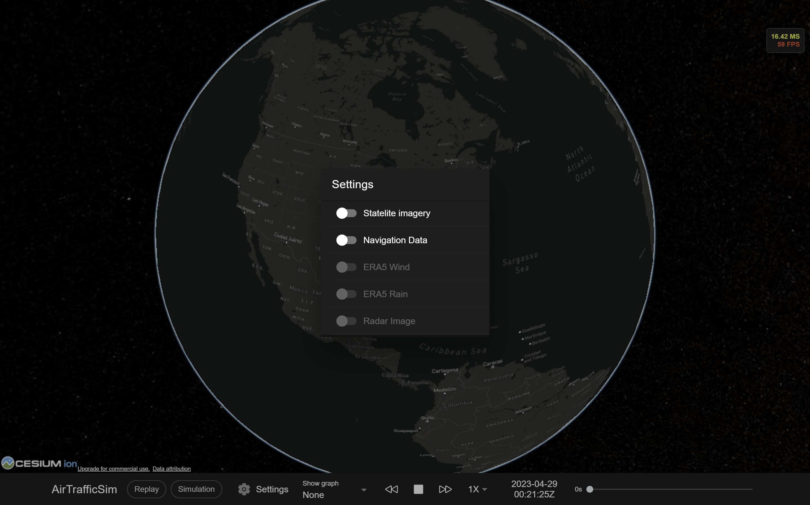
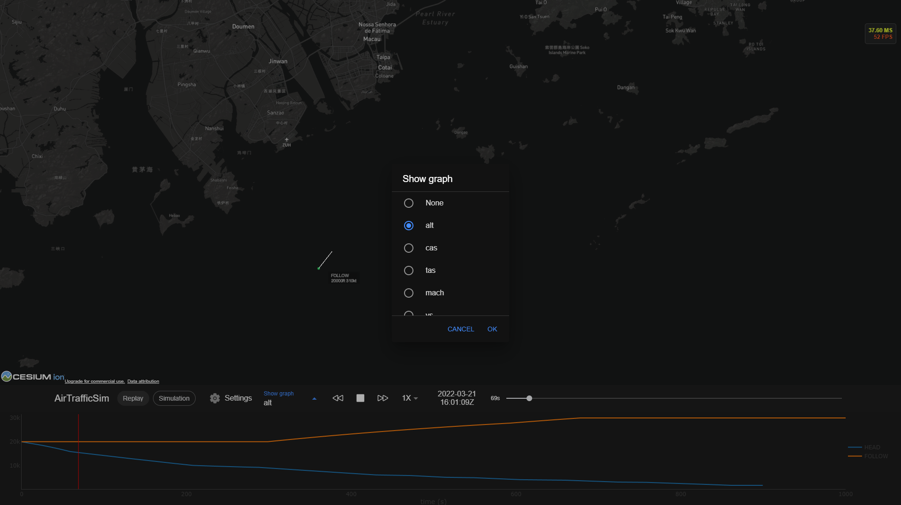

Navigating the UI#
The web-based user interface contains two main parts: the globe viewport at the top and the toolbar at the bottom. This page will explain the usage of the different components in the UI.

1. Globe viewport#
The globe viewport provides a 3D globe for a user to interact with. You can operate the camera with a mouse or with touch gestures following these methods.
Mouse |
Touch |
|
|---|---|---|
Pan |
Left click + drag |
One finger drag |
Zoom |
Mouse scroll wheel or Right click + drag |
Two finger pinch |
Rotate |
Middle click + drag, or CTRL + Left/Right click + drag |
Two finger drag |
2. Mode selector#
You can select different AirTrafficSim modes (Replay/Simulation) by clicking on one of the buttons. Replay mode will replay historical or simulation flight trajectory data stored in data/flight_data while Simulation mode will initiate a simulation and show the flight trajectory live.
In Replay mode, select the reply data file which can be historical or simulation data.#
In Simulation mode, select a simulation environment to begin the simulation.#
3. Setting#
In the setting, you can select different visualization modes including showing satellite imagery, showing navigation data, showing ERA5 wind and rain data, and showing weather radar images.
4. Show graph#
In Simulation mode or Replay mode with simulation data, you can view the graph of different simulation parameters by clicking the Show graph button.
6. Speed selector#
You can select how fast the data are played from 1X, 2X, 5X, 10X, 20X, 50X, to 100X.
7. Clock#
The clock indicates the current time of the environment in UTC format.
8. Timeline#
The timeline represents the full duration of the data file. You can drag the timeline to different positions to quickly go through different moments.